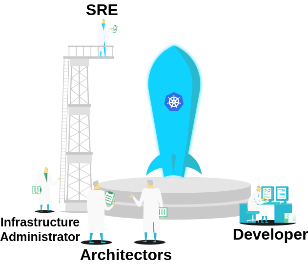

...
testsuites.DriverInfo{
Name: "csi-nfsplugin",
MaxFileSize: testpatterns.FileSizeLarge,
SupportedFsType: sets.NewString(
"",
),
Capabilities: map[testsuites.Capability]bool{
testsuites.CapPersistence: true,
testsuites.CapExec: true,
},
}
...Kubernetes cluster
Testing Performance and Scalability
Evgenii Frikin
Huawei
1.0.0
2021-05-30
About me
Evgenii Frikin | My experience:
|
Agenda
| Introduction Problem Scalability testing Workload testing Solution Overview Compare Deploy Test Measurements Compare of results Experience |  |
Introduction
Introduction
Introduction
Introduction
Introduction
Architect
Capacity planning

Cost calculation
Scalability architecture
Introduction
Introduction
Introduction
Introduction
General problems
General problems
General problems
General problems
Scalability testing problems
Scalability testing problems
Scalability testing problems
Workload testing problems
Workload testing problems
Workload testing problems
Scalability testing solutions
Scalability testing solutions
Scalability testing solutions
Why kubemark?
Why kubemark?
Why kubemark?
Why kubemark?
Why kubemark?
Why kubemark?
Why kubemark?
Workload testing solutions
Workload testing solutions
Why clusterloader2?
Why clusterloader2?
Simple
Kubeconfig
Definition of sest (YAML)
Providers (gke, kubemark, aws, local, etc)

Why clusterloader2?
Why clusterloader2?
Why clusterloader2?
Deploy of hollow cluster
Deploy of hollow cluster
Deploy of hollow cluster
Deploy of hollow cluster
clusterloader2 run
clusterloader2 run
Results of clusterloader2 work

Deploy of large cluster
Results of clusterloader2 work
Results of measurements for etcd
Results of measurements for API server
Our experience
Our experience
Our experience
Our experience
ANY QUESTIONS?

FEEL FREE TO ASK ME